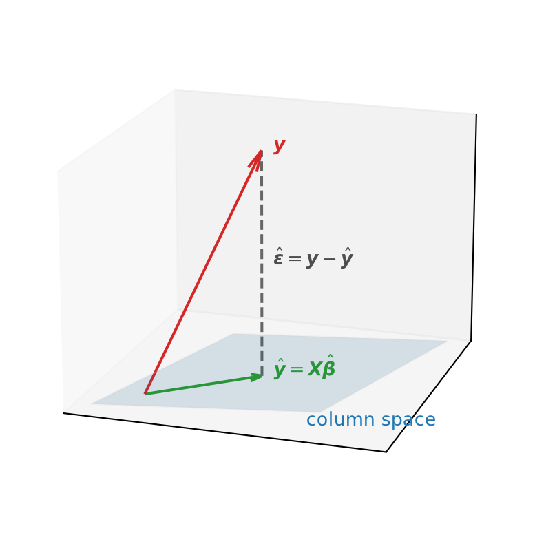
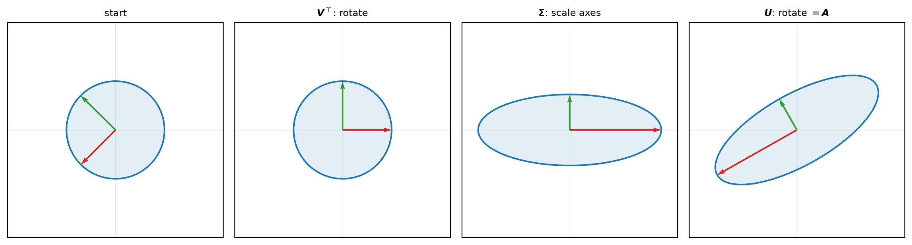

Chapter 3 decomposed a square map through its eigenvalues: when \(\boldsymbol{A}\) has a full set of eigenvectors it factors as \(\boldsymbol{A} = \boldsymbol{P}\boldsymbol{D}\boldsymbol{P}^{-1}\), and a symmetric \(\boldsymbol{A}\) even better as \(\boldsymbol{A} = \boldsymbol{Q}\boldsymbol{\Lambda}\boldsymbol{Q}^\top\). But eigenvalues only speak to square maps, and the matrices finance actually hands us — a panel of returns, a design matrix of regressors — are rectangular. This chapter builds the tools for maps of any shape. The thread runs from orthogonality, to the projection that solves least squares (the workhorse of econometrics), to the singular value decomposition that generalizes the spectral theorem to every matrix, and finally to its statistical payoff in principal component analysis.
4.1 Orthonormal bases and orthogonal matrices
Chapter 2 gave two vectors a way to be perpendicular (Definition 2.9) and a way to have unit length (Definition 2.8). A basis that has both properties at once is the most convenient basis there is.
Definition 4.1 A list of vectors \(\boldsymbol{q}_1, \dots, \boldsymbol{q}_k\) is orthonormal if the vectors are pairwise orthogonal and each has unit length: \[
\langle \boldsymbol{q}_i, \boldsymbol{q}_j \rangle =
\begin{cases} 1 & i = j, \\ 0 & i \neq j. \end{cases}
\] An orthonormal basis is a basis that is also orthonormal.
Why insist on this? With an arbitrary basis, finding the coordinates of a vector means solving a system. With an orthonormal basis, the coordinates are simply inner products — you read them off one at a time.
Theorem 4.1 If \(\boldsymbol{q}_1, \dots, \boldsymbol{q}_n\) is an orthonormal basis of \(\mathbb{R}^n\), then every \(\boldsymbol{x}\) expands as \[
\boldsymbol{x} = \sum_{i=1}^n \langle \boldsymbol{x}, \boldsymbol{q}_i \rangle\, \boldsymbol{q}_i .
\]
Proof. Since the \(\boldsymbol{q}_i\) form a basis, \(\boldsymbol{x} = \sum_i c_i \boldsymbol{q}_i\) for some coefficients \(c_i\). Take the inner product of both sides with \(\boldsymbol{q}_j\) and use orthonormality: \[
\langle \boldsymbol{x}, \boldsymbol{q}_j \rangle = \sum_i c_i \langle \boldsymbol{q}_i, \boldsymbol{q}_j \rangle = c_j .
\] So the \(j\)-th coordinate is exactly \(\langle \boldsymbol{x}, \boldsymbol{q}_j \rangle\).
Each term \(\langle \boldsymbol{x}, \boldsymbol{q}_i \rangle\, \boldsymbol{q}_i\) is the projection of \(\boldsymbol{x}\) onto the direction \(\boldsymbol{q}_i\) (Theorem 2.2, with \(\langle \boldsymbol{q}_i, \boldsymbol{q}_i \rangle = 1\)). The theorem says an orthonormal basis lets you rebuild any vector from its shadows on the axes.
Definition 4.2 A square matrix \(\boldsymbol{Q}\) is orthogonal if its columns are orthonormal. Equivalently, \[
\boldsymbol{Q}^\top \boldsymbol{Q} = \boldsymbol{I}, \qquad\text{so}\qquad \boldsymbol{Q}^{-1} = \boldsymbol{Q}^\top .
\]
The identity \(\boldsymbol{Q}^\top\boldsymbol{Q} = \boldsymbol{I}\) is just the orthonormality conditions collected into one matrix equation: the \((i,j)\) entry of \(\boldsymbol{Q}^\top\boldsymbol{Q}\) is \(\langle \boldsymbol{q}_i, \boldsymbol{q}_j \rangle\). The inverse comes for free — no computation, just a transpose. Geometrically, an orthogonal matrix is a rigid motion: it preserves every inner product, and therefore every length and angle, \[
\langle \boldsymbol{Q}\boldsymbol{x}, \boldsymbol{Q}\boldsymbol{y} \rangle = (\boldsymbol{Q}\boldsymbol{x})^\top (\boldsymbol{Q}\boldsymbol{y}) = \boldsymbol{x}^\top \boldsymbol{Q}^\top\boldsymbol{Q}\, \boldsymbol{y} = \boldsymbol{x}^\top \boldsymbol{y} = \langle \boldsymbol{x}, \boldsymbol{y} \rangle .
\] These are exactly the rotation and reflection panels from the gallery in Section 3.1 — the maps that moved the “F” without distorting it. Their determinant records which kind: taking determinants in \(\boldsymbol{Q}^\top\boldsymbol{Q} = \boldsymbol{I}\) gives \((\det\boldsymbol{Q})^2 = 1\), so \(\det\boldsymbol{Q} = +1\) for a rotation (orientation preserved) and \(-1\) for a reflection (orientation flipped). The orthogonal \(\boldsymbol{Q}\) we met in the spectral theorem (Theorem 3.2) is the same object: the eigenvectors of a symmetric matrix assemble into a rigid change of axes.
4.2 Matrix calculus
The optimization problems in finance — minimize a portfolio’s variance, minimize a regression’s squared error — ask us to differentiate a scalar built from vectors and matrices with respect to a whole vector at once. Doing this component by component is unbearable.
Recall the scalar warm-up. For \(z = f(x, y)\), the total differential collects both partial rates into one linear expression, \[
dz = \frac{\partial z}{\partial x}\, dx + \frac{\partial z}{\partial y}\, dy = \begin{bmatrix} \dfrac{\partial z}{\partial x} & \dfrac{\partial z}{\partial y} \end{bmatrix} \begin{bmatrix} dx \\ dy \end{bmatrix}.
\] The same bookkeeping, stacked, turns a vector function’s local behavior into a matrix–vector product.
Example 4.1 Denote \(f:\mathbb{R}^2\mapsto\mathbb{R}^2\)\[
\begin{bmatrix}
y_1 \\
y_2
\end{bmatrix}
= f(x_1, x_2) =
\begin{bmatrix}
\sin(a x_1 + b x_2) \\
\sin(c x_1 + d x_2)
\end{bmatrix}
\] The total differential of \(y_1\)\(y_2\) with respect to \(x_1\)\(x_2\) is \[
\begin{align*}
dy_1 = \cos(a x_1 + b x_2) (a dx_1 + b dx_2),\\
dy_2 = \cos(c x_1 + d x_2) (c dx_1 + d dx_2).
\end{align*}
\] The above two equations can be written in matrix form: \[
\begin{bmatrix}
dy_1 \\
dy_2
\end{bmatrix}
=
\begin{bmatrix}
a \cos(a x_1 + b x_2) & b \cos(a x_1 + b x_2) \\
c \cos(c x_1 + d x_2) & d \cos(c x_1 + d x_2)
\end{bmatrix}
\begin{bmatrix}
dx_1 \\
dx_2
\end{bmatrix}.
\] where we could see that the matrix in the middle is a matrix of partial derivatives \[
\begin{bmatrix}
\frac{\partial y_1}{\partial x_1} & \frac{\partial y_1}{\partial x_2} \\
\frac{\partial y_2}{\partial x_1} & \frac{\partial y_2}{\partial x_2}
\end{bmatrix}
=
\begin{bmatrix}
a \cos(a x_1 + b x_2) & b \cos(a x_1 + b x_2) \\
c \cos(c x_1 + d x_2) & d \cos(c x_1 + d x_2)
\end{bmatrix}.
\]
The shape of the Jacobian is “numerator’s length by denominator’s length,” row \(i\) recording how output \(f_i\) responds to every input.
Definition 4.4 For a scalar function \(g : \mathbb{R}^m \to \mathbb{R}\), the differential is \(dg = \dfrac{\partial g}{\partial \boldsymbol{x}^\top}\, d\boldsymbol{x}\) with a \(1 \times m\) Jacobian (a row). The gradient is its transpose, the column vector \[
\nabla g = \left( \frac{\partial g}{\partial \boldsymbol{x}^\top} \right)^\top = \frac{\partial g}{\partial \boldsymbol{x}}
= \begin{bmatrix} \partial g/\partial x_1 \\ \vdots \\ \partial g/\partial x_m \end{bmatrix} .
\]
Definition 4.5 The Hessian of a scalar \(g : \mathbb{R}^m \to \mathbb{R}\) is the \(m \times m\) matrix of second partials, \[
\boldsymbol{H} = \frac{\partial^2 g}{\partial \boldsymbol{x}\, \partial \boldsymbol{x}^\top},
\qquad H_{ij} = \frac{\partial^2 g}{\partial x_i\, \partial x_j},
\] which is the Jacobian of the gradient \(\nabla g\). For twice-continuously-differentiable \(g\) it is symmetric.
In undergrad, we learned a very easy way to take derivatives of a scalar function wrt a scalar. For example, the simplest case \(d(ax)/dx = a\). Similarly, in the world of matrix, we want to work with matrices and vectors in a easy way instead of taking derivatives element by element. The key idea is: we do not take derivatives — we take differentials.
The whole method is to manipulate \(d\boldsymbol{f}\) until it reads \(d\boldsymbol{f} = \boldsymbol{A}\, d\boldsymbol{x}\); then \(\boldsymbol{A}\) is the Jacobian, with no element-by-element grind. The manipulations use a short list of rules, each of which is the ordinary differential of a product or sum, promoted to matrices (here \(a\) is a scalar and \(\boldsymbol{A}, \boldsymbol{B}\) are constant):
Example 4.2\(f(\boldsymbol{x}) = \boldsymbol{x}^\top\boldsymbol{x}\).
By the product rule and \(d(\boldsymbol{x}^\top) = (d\boldsymbol{x})^\top\), \[
df = (d\boldsymbol{x})^\top \boldsymbol{x} + \boldsymbol{x}^\top d\boldsymbol{x} = 2\,\boldsymbol{x}^\top d\boldsymbol{x},
\] using that the scalar \((d\boldsymbol{x})^\top \boldsymbol{x} = \boldsymbol{x}^\top d\boldsymbol{x}\). The Jacobian is \(2\boldsymbol{x}^\top\) and the gradient is \(\nabla f = 2\boldsymbol{x}\).
Example 4.3\(f(\boldsymbol{x}) = \boldsymbol{x}^\top\boldsymbol{A}\boldsymbol{x}\) with \(\boldsymbol{A}\) symmetric.
Differentiating the product, \[
df = (d\boldsymbol{x})^\top \boldsymbol{A}\boldsymbol{x} + \boldsymbol{x}^\top \boldsymbol{A}\, d\boldsymbol{x} = 2\,\boldsymbol{x}^\top\boldsymbol{A}\, d\boldsymbol{x},
\] where the two terms coincide because \(\boldsymbol{A}^\top = \boldsymbol{A}\). Hence \[
\text{Jacobian: } \boldsymbol{J} = 2\boldsymbol{x}^\top\boldsymbol{A}, \qquad
\nabla f = 2\boldsymbol{A}\boldsymbol{x},
\qquad \boldsymbol{H} = 2\boldsymbol{A} .
\]
4.3 Least squares
We now have both tools — projection and matrix calculus — trained on the central problem of empirical finance: linear regression. Given a design matrix \(\boldsymbol{X} \in \mathbb{R}^{n \times p}\) of \(p\) regressors \(n\) samples and an outcome \(\boldsymbol{y} \in \mathbb{R}^n\), we want coefficients \(\boldsymbol{\beta}\) with \(\boldsymbol{X}\boldsymbol{\beta} \approx \boldsymbol{y}\). With more observations than regressors (\(n > p\)) the system \(\boldsymbol{X}\boldsymbol{\beta} = \boldsymbol{y}\) has no exact solution. More formally, we need to estimate the coefficients in the linear model \[
\boldsymbol{y} = \boldsymbol{X}\boldsymbol{\beta} + \boldsymbol{\varepsilon},
\] Least squares settles for the closest thing, the \(\boldsymbol{\beta}\) minimizing the sum of squared errors, \[
\ell(\boldsymbol{\beta}) = (\boldsymbol{y} - \boldsymbol{X}\boldsymbol{\beta})^\top (\boldsymbol{y} - \boldsymbol{X}\boldsymbol{\beta}) = \lVert \boldsymbol{y} - \boldsymbol{X}\boldsymbol{\beta} \rVert^2 .
\] There are two roads to the answer, one through calculus and one through geometry, and they meet at the same equations.
Road 1: the first-order condition. Treat \(\ell\) as a scalar function of \(\boldsymbol{\beta}\) and take its differential. \[
\begin{align*}
d\ell
&=2(\boldsymbol{y} - \boldsymbol{X}\boldsymbol{\beta})^\top d(\boldsymbol{y} - \boldsymbol{X}\boldsymbol{\beta}) \quad \text{by } d(x^\top x) = 2 x^\top dx.\\
&=2(\boldsymbol{y} - \boldsymbol{X}\boldsymbol{\beta})^\top (-\boldsymbol{X})\, d\boldsymbol{\beta} \quad \text{by rule (2)}\\
\end{align*}
\] The gradient is \(\nabla \ell = -2\boldsymbol{X}^\top(\boldsymbol{y} - \boldsymbol{X}\boldsymbol{\beta})\). Setting it to zero at the optimum \(\hat{\boldsymbol{\beta}}\) yields \[
\boldsymbol{X}^\top \boldsymbol{X}\, \hat{\boldsymbol{\beta}} = \boldsymbol{X}^\top \boldsymbol{y} \qquad \Rightarrow \qquad \hat{\boldsymbol{\beta}} = (\boldsymbol{X}^\top \boldsymbol{X})^{-1} \boldsymbol{X}^\top \boldsymbol{y}.
\tag{4.1}\]
Road 2: orthogonal projection. Another way to understand linear regression is geometrically. The fitted vector \(\hat{\boldsymbol{y}}\) is the orthogonal projection of \(\boldsymbol{y}\) onto the column space of \(\boldsymbol{X}\). Thus, we can decompose \(\boldsymbol{y}\) as \[
\boldsymbol{y}=\hat{\boldsymbol{y}}+\hat{\boldsymbol{\epsilon}},
\] where
\[
\hat{\boldsymbol{y}}\in\operatorname{col}(\boldsymbol{X})
\qquad\text{and}\qquad
\hat{\boldsymbol{\epsilon}}\perp\operatorname{col}(\boldsymbol{X}).
\] Because \(\hat{\boldsymbol{y}}\) lies in the column space of \(\boldsymbol{X}\), it can be written as \[
\hat{\boldsymbol{y}}=\boldsymbol{X}\hat{\boldsymbol{\beta}}.
\]
The vector \(\hat{\boldsymbol{y}}\) is the point in \(\operatorname{col}(\boldsymbol{X})\) closest to \(\boldsymbol{y}\), so it solves \[
\min_{\boldsymbol{\beta}}
\lVert \boldsymbol{y}-\boldsymbol{X}\boldsymbol{\beta} \rVert.
\] Equivalently, the residual vector \[
\hat{\boldsymbol\epsilon}= \boldsymbol{y}-\hat{\boldsymbol y} = \boldsymbol{y}-\boldsymbol{X}\hat{\boldsymbol{\beta}}
\] is orthogonal to every vector in \(\operatorname{col}(\boldsymbol X)\), and therefore to every column of \(\boldsymbol X\). This is the same geometric idea used in the proof of the projection theorem in Theorem 2.2. Hence, \[
\boldsymbol{X}^\top\hat{\boldsymbol{\epsilon}}=0.
\] Substituting the expression for the residual gives \[
\boldsymbol{X}^\top \left(\boldsymbol{y}-\boldsymbol{X}\hat{\boldsymbol{\beta}}\right)=0 \quad \Rightarrow \quad \boldsymbol{X}^\top\boldsymbol{X}\hat{\boldsymbol{\beta}} = \boldsymbol{X}^\top\boldsymbol{y} \quad \Rightarrow \quad \hat{\boldsymbol{\beta}} = (\boldsymbol{X}^\top\boldsymbol{X})^{-1}\boldsymbol{X}^\top\boldsymbol{y}.
\]
Code
import numpy as npimport matplotlib.pyplot as plt# Two regressors spanning a plane (the column space) in R^3, and an outcome y.a1 = np.array([1.0, 0.2, 0.0])a2 = np.array([0.3, 1.0, 0.0])X = np.column_stack([a1, a2])y = np.array([0.6, 0.5, 1.3])# Least-squares fit: projection of y onto the column space.beta = np.linalg.solve(X.T @ X, X.T @ y)yhat = X @ betafig = plt.figure(figsize=(6, 5))ax = fig.add_subplot(projection="3d")# The column space, shaded.s = np.linspace(-0.2, 1.2, 2)t = np.linspace(-0.2, 1.2, 2)S, T = np.meshgrid(s, t)plane = S[..., None] * a1 + T[..., None] * a2ax.plot_surface(plane[..., 0], plane[..., 1], plane[..., 2], color="tab:blue", alpha=0.15, edgecolor="0.8")# y, its fit yhat, and the residual dropped between them.ax.quiver(0, 0, 0, *y, color="tab:red", arrow_length_ratio=0.08)ax.quiver(0, 0, 0, *yhat, color="tab:green", arrow_length_ratio=0.1)ax.plot(*np.column_stack([yhat, y]), color="0.4", ls="--")ax.text(*y, r" $\boldsymbol{y}$", color="tab:red")ax.text(*yhat, r" $\hat{\boldsymbol{y}}=\boldsymbol{X}\hat{\boldsymbol{\beta}}$", color="tab:green")ax.text(*(0.5* (y + yhat)), r" $\hat{\boldsymbol{\epsilon}} = \boldsymbol{y}-\hat{\boldsymbol{y}}$", color="0.3")ax.text(a1[0], a1[1], a1[2] -0.15, "column space", color="tab:blue")ax.set_xticks([]); ax.set_yticks([]); ax.set_zticks([])ax.view_init(elev=18, azim=-72)plt.show()

In future classes (econometrics, empirical asset pricing), you will see that the moment condition of linear regression is \(E(x'\epsilon) = 0\), which is exactly the population version of the orthogonality condition \(\boldsymbol{X}^\top\hat{\boldsymbol{\epsilon}}=0\). We have now seen the sample version. Population model, sample model, and their relationship are beyond the scope of the boot camp, but just keep in mind that we work with random variables in the population, and with numbers in the sample.
One more caveat is the invertibility. Everything hinges on \(\boldsymbol{X}^\top\boldsymbol{X}\) being invertible, and Theorem 3.1 told us when: precisely when \(\operatorname{rank}\boldsymbol{X} = p\), i.e. the regressors are linearly independent. This is the no-multicollinearity condition of Example 2.1 and Example 3.5, now seen as the exact requirement for the least-squares coefficients to be uniquely determined. If a regressor is a linear combination of the others, then \(\boldsymbol{X}^\top\boldsymbol{X}\) is singular and infinitely many \(\hat{\boldsymbol{\beta}}\) give the identical fit \(\hat{\boldsymbol{y}}\), differing by a vector in the kernel.
4.4 The singular value decomposition
We have seen that a symmetric matrix can be diagonalized by an orthogonal change of basis. In this section, we generalize this to any matrix, symmetric or not, square or rectangular – singular value decomposition (SVD). SVD says that every matrix admits a decomposition into a rotation, a pure axis-scaling, and another rotation.
Theorem 4.2 (Singular value decomposition) Every matrix \(\boldsymbol{A} \in \mathbb{R}^{m \times n}\) factors as \[
\boldsymbol{A} = \boldsymbol{U}\boldsymbol{\Sigma}\boldsymbol{V}^\top,
\] where \(\boldsymbol{U} \in \mathbb{R}^{m \times m}\) and \(\boldsymbol{V} \in \mathbb{R}^{n \times n}\) are orthogonal and \(\boldsymbol{\Sigma} \in \mathbb{R}^{m \times n}\) is diagonal with nonnegative entries \(\sigma_1 \ge \sigma_2 \ge \cdots \ge 0\), the singular values. The columns of \(\boldsymbol{V}\) are the right singular vectors, those of \(\boldsymbol{U}\) the left singular vectors.
Singular values are the square roots of the eigenvalues of \(\boldsymbol{A}^\top\boldsymbol{A}\) if \(m \ge n\) or of \(\boldsymbol{A}\boldsymbol{A}^\top\) if \(m < n\);
Right singular vectors are the eigenvectors of \(\boldsymbol{A}^\top\boldsymbol{A}\);
Left singular vectors are the eigenvectors of \(\boldsymbol{A}\boldsymbol{A}^\top\);
Writing out the blocks, with \(\boldsymbol{u}_1, \dots, \boldsymbol{u}_m\) the columns of \(\boldsymbol{U}\) and \(\boldsymbol{v}_1, \dots, \boldsymbol{v}_n\) the columns of \(\boldsymbol{V}\), \[
\boldsymbol{A} =
\underbrace{\begin{bmatrix} \big| & & \big| \\ \boldsymbol{u}_1 & \cdots & \boldsymbol{u}_m \\ \big| & & \big| \end{bmatrix}}_{m \times m}
\underbrace{\begin{bmatrix} \sigma_1 & & \\ & \ddots & \\ & & \sigma_n \\ 0 & \cdots & 0 \\ \vdots & & \vdots \\ 0 & \cdots & 0 \end{bmatrix}}_{m \times n}
\underbrace{\begin{bmatrix} \text{---} & \boldsymbol{v}_1^\top & \text{---} \\ & \vdots & \\ \text{---} & \boldsymbol{v}_n^\top & \text{---} \end{bmatrix}}_{n \times n} .
\tag{4.2}\] The middle factor \(\boldsymbol{\Sigma}\) is rectangular but “diagonal” in the sense that its only nonzero entries sit in positions \((i,i)\). The display above is drawn for a tall matrix (\(m > n\)), the shape of a finance design matrix: the singular values \(\sigma_1, \dots, \sigma_n\) fill the top \(n \times n\) block and the surplus rows are zero. For a wide matrix (\(m < n\)), the singular values fill the left \(m \times m\) block and the surplus columns are zero.
The decomposition is easiest to read geometrically from right to left, just as with diagonalization. Applied to a vector, \(\boldsymbol{V}^\top\) performs a rigid rotation/reflection, \(\boldsymbol{\Sigma}\) stretches along the coordinate axes by the factors \(\sigma_i\), and \(\boldsymbol{U}\) rotates/reflects again. Especially, for nonsquare matrices, \(\boldsymbol{\Sigma}\) does not only stretch but also crushes the surplus dimensions to zero. In the following examples, the first matrix is \(\boldsymbol{\Sigma}\) and the second is a vector after the first rotation \(\boldsymbol{V}^\top\). The tall matrix example shows a vector in \(\mathbb{R}^2\) being stretched into \(\mathbb{R}^3\), where the third coordinate is filled with zero. The wide matrix example shows a vector in \(\mathbb{R}^3\) being crushed into \(\mathbb{R}^2\), where the third coordinate is lost. \[
\text{For a tall matrix ($m > n$):}
\begin{bmatrix}
1 & 0 \\
0 & 1 \\
0 & 0
\end{bmatrix}
\begin{bmatrix}
1 \\
2
\end{bmatrix}
=
\begin{bmatrix}
1 \\
2 \\
0
\end{bmatrix}
\]\[
\text{For a wide matrix ($m < n$):}
\begin{bmatrix}
1 & 0 & 0 \\
0 & 1 & 0 \\
\end{bmatrix}
\begin{bmatrix}
1 \\
2 \\
3
\end{bmatrix}
=
\begin{bmatrix}
1 \\
2
\end{bmatrix}
\]
So any linear map, however it distorts space, is nothing more than a rotation, an axis-aligned stretch, and a rotation. Feeding the unit sphere through the map produces an ellipsoid whose semi-axis lengths are the singular values \(\sigma_i\) and whose axis directions are the columns of \(\boldsymbol{U}\). This is the circle-to-ellipse picture from Section 3.7, now available for matrices that are not symmetric — indeed not even square.
Code
import numpy as npimport matplotlib.pyplot as pltA = np.array([[1.4, 0.9], [0.2, 1.1]])U, s, Vt = np.linalg.svd(A)theta = np.linspace(0, 2* np.pi, 200)circle = np.array([np.cos(theta), np.sin(theta)])stages = [ (np.eye(2), "start"), (Vt, r"$\boldsymbol{V}^\top$: rotate"), (np.diag(s) @ Vt, r"$\boldsymbol{\Sigma}$: scale axes"), (U @ np.diag(s) @ Vt, r"$\boldsymbol{U}$: rotate $=\boldsymbol{A}$"),]fig, axes = plt.subplots(1, 4, figsize=(12, 3.2))for ax, (M, title) inzip(axes, stages): shape = M @ circle ax.plot(*shape, color="tab:blue", lw=1.5) ax.fill(*shape, color="tab:blue", alpha=0.12)# track the two right-singular directions through the stagesfor v, color inzip(Vt, ["tab:red", "tab:green"]): w = M @ v ax.quiver(0, 0, w[0], w[1], angles="xy", scale_units="xy", scale=1, color=color) ax.set_title(title, fontsize=9) ax.set_aspect("equal") ax.set_xlim(-2.2, 2.2) ax.set_ylim(-2.2, 2.2) ax.axhline(0, color="0.9", lw=0.5, zorder=0) ax.axvline(0, color="0.9", lw=0.5, zorder=0) ax.set_xticks([]); ax.set_yticks([])fig.tight_layout()plt.show()

4.5 Principal component analysis
Consider an \(n\times p\) data matrix \(\boldsymbol{X}\) with column-wise zero empirical mean (the sample mean of each column has been shifted to zero). However, in some applications, the \(p\) features are highly correlated, so that the \(p\)-dimensional data actually live in a lower-dimensional subspace. For example, in the below figure, the two features \(\boldsymbol{x}_1\) and \(\boldsymbol{x}_2\) are highly correlated. The most informative direction is the one along which the data are most spread out, which is a linear combination of \(\boldsymbol{x}_1\) and \(\boldsymbol{x}_2\).
Therefore, we want to find that linear combination reduce the number of feature to one. In other words, we want to find a vector \(\boldsymbol{w}\) such that \[
\boldsymbol{X}\boldsymbol{w} =
\begin{bmatrix}
\big| & \big| \\
\boldsymbol{x}_1 & \boldsymbol{x}_2 \\
\big| & \big|
\end{bmatrix}
\begin{bmatrix}
w_1 \\
w_2
\end{bmatrix}
=
w_1 \boldsymbol{x}_1 + w_2 \boldsymbol{x}_2
\] maximizes the variance of the projected data \(\boldsymbol{X}\boldsymbol{w}\) (more precisely, we require \(\lVert\boldsymbol{w} \rVert = 1\)). As \(\boldsymbol{X}\) is mean zero, the variance of \(\boldsymbol{X}\boldsymbol{w}\) is \(\boldsymbol{w}^\top\boldsymbol{X}^\top\boldsymbol{X}\boldsymbol{w}/(n-1)\). As shown in Theorem 3.3, the maximizer is the top eigenvector of the sample covariance matrix \(\boldsymbol{X}^\top\boldsymbol{X}/(n-1)\), and the maximum variance is its eigenvalue.
More generally, principal component analysis (PCA) is a technique of dimension reduction that finds a set of orthogonal directions (principal components) that capture the most variance in the data. The spectral theorem factors it as (ignore the \(1/(n-1)\) factor for now) \[
\boldsymbol{X}^\top\boldsymbol{X} = \boldsymbol{Q}\boldsymbol{\Lambda}\boldsymbol{Q}^\top,
\qquad \boldsymbol{\Lambda} = \operatorname{diag}(\lambda_1, \dots, \lambda_n), \quad \lambda_1 \ge \cdots \ge \lambda_n \ge 0 .
\] The orthonormal eigenvectors \(\boldsymbol{q}_1, \dots, \boldsymbol{q}_n\) are the principal directions: uncorrelated features, ranked by the variance they carry, which is exactly their eigenvalue \(\lambda_i\). The first principal component is the direction of maximum variance — precisely the maximizer of the Rayleigh quotient from Theorem 3.3, attained at the top eigenvector. Each successive component captures the most remaining variance in a direction orthogonal to those before it.
Along with PCA, people often use percentage of variance explained (PVE) to determine how many principal components to keep. As \(\boldsymbol{Q}\) is orthonormal, the covariance can be written as \[
\boldsymbol{X}^\top\boldsymbol{X} = \sum_{i=1}^n \lambda_i \boldsymbol{q}_i \boldsymbol{q_i}^\top = \sum_{i=1}^n \lambda_i.
\] The percentage of variance explained by the first \(k\) principal components is \[
\text{PVE} = \frac{\sum_{i=1}^k \lambda_i}{\sum_{i=1}^n \lambda_i}.
\]
In empirical asset pricing, PCA is used and generalized to reduce the dimensionality of a large set of correlated factors, for example to extract a small number of “market” factors from a large panel of asset returns. There is a large literature related to PCA in asset pricing.
In applications, we often use the SVD of the centered data matrix \(\boldsymbol{X}\) to compute PCA. The SVD gives \[
\boldsymbol{X}=\boldsymbol{U}\boldsymbol{\Sigma}\boldsymbol{V}^\top,
\] where the columns of \(\boldsymbol{V}\) are the principal directions. The singular values in \(\boldsymbol{\Sigma}\) are the square roots of the eigenvalues of \(\boldsymbol X^\top\boldsymbol X\). The principal components are therefore the columns of \(\boldsymbol{X}\boldsymbol{V}\). Computing PCA through the SVD of \(\boldsymbol{X}\) is generally more numerically stable than explicitly forming and diagonalizing \(\boldsymbol{X}^\top\boldsymbol{X}\).